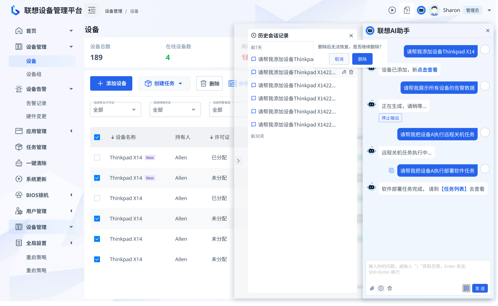
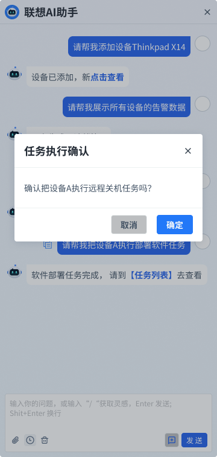
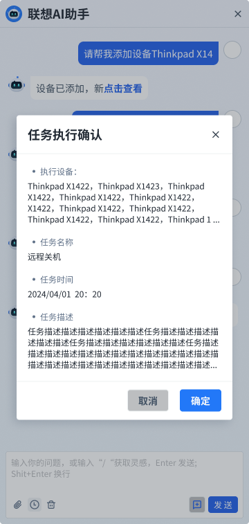
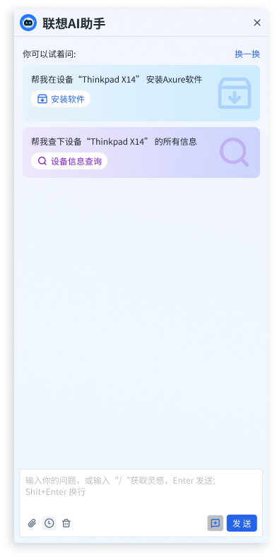

联想管理平台：白色风格演进对比
从“粗糙的玩具式白色弹窗”到“工业级企业级浅色微拟物体系”
原版白底界面的视觉痛点
- 缺乏层级深度：纯白底配黑字，没有使用浅灰底色分离信息区块，视觉扁平干瘪。
- 边缘分割生硬：缺少轻柔的弥散阴影与高精细边框，给人“半成品原型”的粗糙感。
- 缺少企业级状态语义：告警红、警告黄、正常绿都是最刺眼的默认原色，缺少 B 端舒适的浅色标签底色。
平台同款白底（2.1 优化版）亮点
- 与联想平台骨架 1:1 呼应：背景采用 #F8FAFC 浅灰蓝，卡片使用 #FFFFFF 纯白，搭配 10px 柔和弥散阴影。
- 结构化浅色指示牌：告警使用浅粉红底（#FEF2F2）配深红字，安全使用浅薄荷绿（#ECFDF5），符合最高级无障碍可读标准。
- 保留了高能 AI 交互：参数反问单选卡、白盒透视器、多模态拍照排障，全部以清爽白底呈现。
原证据 1: AI助手主视窗
570KB

图片已就绪 (本地可载入)'">白底大框但缺乏卡片容器包装
原证据 2: 任务执行确认
144KB

图片已就绪 (本地可载入)'">单薄弹窗，缺少设备清单与预警
原证据 3: 任务状态确认
119KB

图片已就绪 (本地可载入)'">缺少异步执行流水与重试动作
原证据 4: 悬浮启动图标
278KB

图片已就绪 (本地可载入)'">静态圆球，无智能态与状态交互